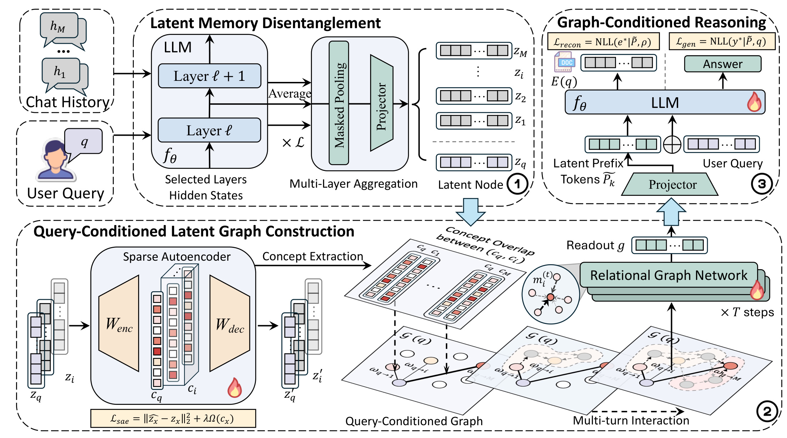
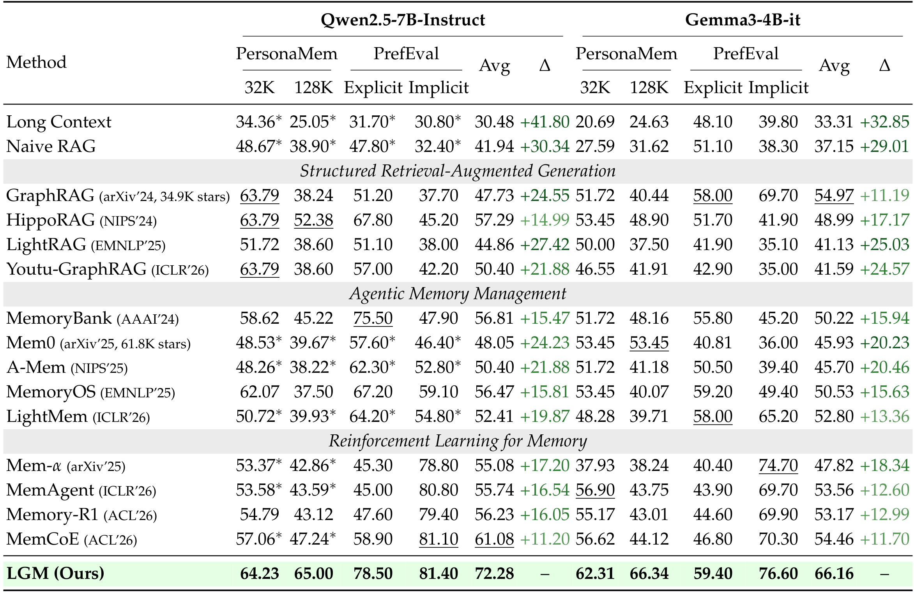
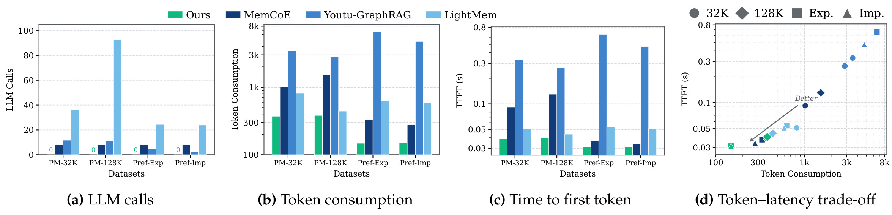
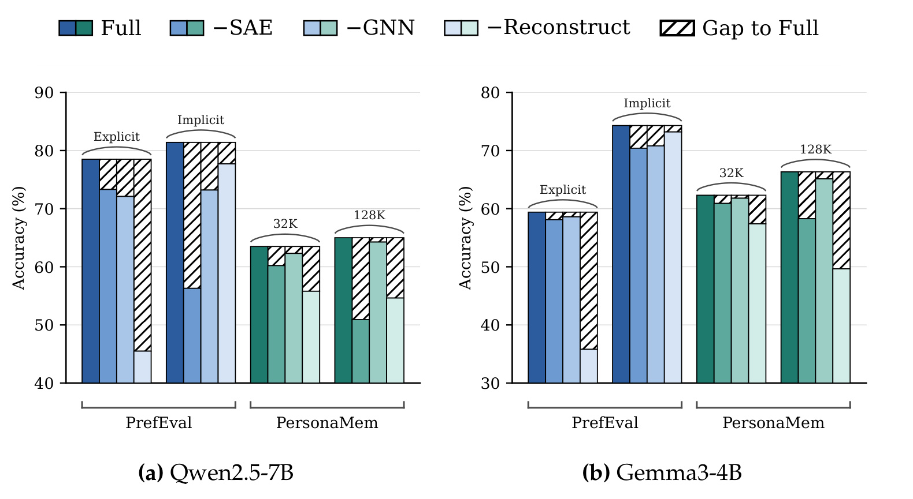
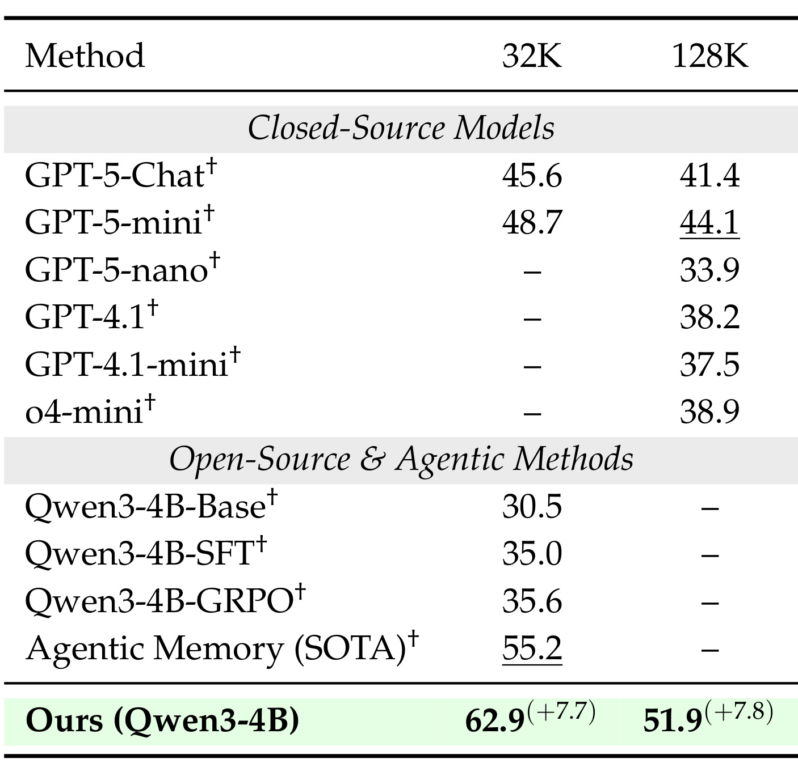
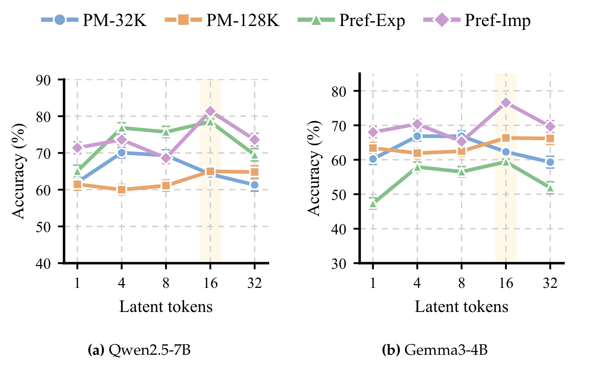
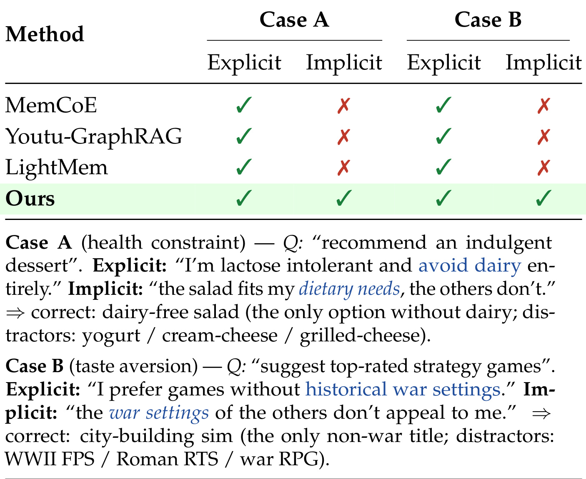
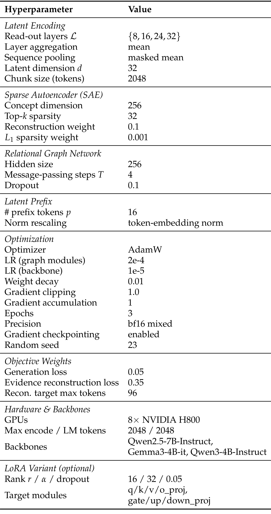

腾讯-LGM：在潜在图中按需组织长期个性化记忆
论文：LGM: Disentangling Long-Term Memory via Latent Neuro-Symbolic Reasoning
作者：Cai Ke、Xinghao Chen、Xiaoyu Shen、Keyu Chen、Siyu An、Junnan Dong、Ruifeng Xu、Ruizhi Qiao、Xing Sun。
第一作者主要机构：腾讯优图实验室；合作机构包括宁波东方理工相关实验室、香港理工大学、深圳河套相关研究机构，机构归属以论文首页上标为准。
公开时间：2026-09-16，arXiv v1；精读日期：2026-09-18。
论文入口：arXiv:2609.18461
代码状态：未核验到本文独立代码或项目入口。本文依据十九页论文正文与附录；实验数值为作者报告，图形估读与本文推断分别标明。
1. 背景和问题
能否按当前查询解缠和组织用户长期记忆，而不必反复重放完整文本历史？
这句话对应论文引言提出的核心问题。长期个性化助手面对的历史与普通知识问答语料有明显区别：有效信息并不总是以一个可直接复制的事实句出现。用户可能在某次点餐时说不要奶，在另一次提到去掉奶酪，又在很久之后说奶油会让胃不舒服。如果现在的问题是推荐甜点，系统需要结合这些记录形成一个合理约束，而不是仅匹配“甜点”一词。每条线索本身都很弱，措辞也不同，却可能共同支持避开乳制品的判断。这里真正需要保持的是过去行为与当前需求之间的关系，以及关系成立的证据，而不是单纯存得更多、检索得更快。
论文引言的乳制品例子说明，显式偏好和隐式偏好并非两个完全不同的用户画像库。直接说“我不吃乳制品”属于显式约束；不加奶、去奶酪、奶油不适等行为可以成为隐式证据。两者在字面空间相距很远，在相关概念空间却应该接近。同时，一句话中的主题、意图、情绪和背景条件会纠缠在一起。“今天不要奶”可能来自身体不适、短期饮食计划、口味变化或商品缺货；把所有否定表达直接归入终身禁忌就会过度推断。因此，论文想学习的不是静态标签分类器，而是受查询驱动的证据组合机制。其目标是回答当前问题时使用相关历史，同时压低无关内容对生成结果的干扰。
常见的平面检索把历史分成片段，将每个片段独立编码，再取相似度最高的若干条。这个过程很好实现，也能支持增量写入，但得分单位是单条记录。假如三个分散片段都只提供一部分证据，它们可能都排不到检索结果前列。扩大返回数量可以增加覆盖率，却也会把大量无关语句送进提示词，后续生成器必须重新完成关系发现和噪声排除。查询与历史越长，维护完整文本上下文的代价越高，模型也未必能从中稳定取出关键事实。论文把这类限制概括为分散信息被独立打分所割裂，而不是断言所有向量检索在隐式偏好上都必然失败。
结构化检索试图用实体关系图、层级摘要或相互链接的笔记解决这一问题。与平面检索相比，它能够表达跨记录关系，但很多结构是在当前查询到来之前预先构建的。用户询问饮食时，几条用餐记录应该聚合；用户询问预算时，同一批记录可能应该按价格和消费频率重新连接。预先固定的关系并不一定覆盖这些临时形成的关联。这里也需要区分“图结构预建”和“检索过程完全不依赖查询”：现实中的图检索可以使用查询进行排序、遍历或摘要，论文批评的重点是底层记忆表示和连接不能充分随任务重组，不应把整个相关研究简单描述成没有查询条件。
另一条路径让智能体决定何时写入、更新、遗忘和读取文本记忆，甚至通过强化学习优化这些动作。它强调外部记忆的生命周期，适合构建有解释性的记忆管理系统。但如果最后仍需把选中的文本重新送给大模型，那么上下文开销和片段表达纠缠仍然存在。LGM选择把可学习的内容前移：历史交互先通过语言模型隐状态变为低维节点，再通过稀疏概念决定当前查询与各节点的连接，用图传播组合分散证据，最后将结果转成很短的连续前缀。这样，记忆不只是提示词外面的一个检索部件，也参与生成损失的反向训练。
这种转向带来三个具体矛盾。首先是压缩与保真：低维表示要抹去无关表述差异，又不能丢掉只有一次出现的长尾约束。其次是结构适应与计算预算：查询变化时应该重新决定关联，但不能每次都用大模型为全历史抽取一张新文本图。第三是潜在推理与可追溯性：连续向量很紧凑，却可能在多步传播中丢失信息，甚至让生成器学会忽略前缀，靠数据中的常见答案取得较低训练损失。LGM的稀疏自编码器、查询条件图和证据重建目标，分别针对这些风险提供约束；它们并没有使风险从理论上消失。
本文使用“神经符号”时，应理解为以稀疏概念和显式关系类型组织神经表示。论文没有展示一个带有形式逻辑语法、可验证推导规则和逐步证明的符号系统。概念维度也不是人工事先命名的“乳糖不耐”“低预算”等标签，非负稀疏激活本身并不足以保证每维单义、稳定或可读。稀疏代码提供了更有结构的中间表示，是否能获得人能理解的概念还需要额外实验。把该方法解释成自动产生可靠知识图谱，会掩盖它主要仍是端到端学习模型这一事实。
这项工作适合关注长期用户记忆、隐式约束理解和生成式个性化的读者。它没有在传统推荐召回或广告点击率上直接报告收益，也没有证明可以原样替换现有用户画像服务。其值得借鉴之处在于：将查询从检索键提升为记忆组合的控制条件，并要求压缩状态能够还原支撑信息。评估它时，除了看最终答案是否正确，还应同时追问历史有没有被完整编码、哪个训练目标迫使模型使用记忆，以及节省的究竟是生成上下文、额外记忆调用，还是完整生命周期的计算。这几个问题决定了论文漂亮的准确率和效率图能在多大范围内迁移到真实系统。
判断这里的记忆能力还需区分用户层面的长期事实与一次回答中的临时偏好。比如同一用户为朋友准备甜点时，朋友的饮食限制可能比用户自己的口味更相关；查询条件能够改变关联权重，但是否正确理解偏好的归属，依赖输入表示和训练案例。论文尚未单列这种多主体条件测试，因此潜在图的灵活性不能被当成自动消除身份混淆的证据。
2. 方法
2.1 潜在记忆解缠
历史由多轮交互组成，当前查询与每个历史单元使用同一个语言模型进行编码。模型先从若干层提取隐状态，跨层平均，再沿序列进行带掩码的均值池化，最后投影和归一化得到低维节点。整体信息流见原论文Figure 2。

图的左上部分解释了语言模型在系统中承担的第一种角色：它把原始历史和当前查询变成潜在节点，而不是先生成一段文本摘要。跨层平均试图同时利用词汇线索和较高层的语义抽象，掩码池化排除填充位置，投影控制后续记忆图的表示宽度。左下部分则说明稀疏自编码器不是最终回答器，它把紧凑节点映射到更高维但只保留少数激活的概念代码，再用查询代码和历史代码的重合程度建立关联。图里相同历史节点可以参与不同查询图，这种变化来自条件边权，而不要求把原始文本永久写成一张唯一知识图谱。
右下的关系图网络承担证据聚合。它沿查询与历史之间的边多次交换信息，得到一个图级状态；右上的投影器再将这个状态变为连续前缀，交给语言模型生成回答。注意图上的火焰标记与附录说明：默认训练不仅更新图网络和投影器，也联合微调骨干模型。因此，该图不是一个可以不训练、只凭外接数据库就获得同样效果的通用外挂方案。读者还应区分图中两条输出监督：回答生成要求满足当前任务，证据重建要求前缀包含可还原的历史信息。这两种约束共享记忆通道，却具有不同的目标文本和解码指令；后者只在训练中提供额外信号，并不意味着上线时每次必须把证据再次完整输出。图示把三阶段连接得很清楚，但具体概念重合函数、消息函数和读出算子的实现细节没有在图中展开，不能从箭头自行补出一种确定网络结构。原文式（2）写成：
符号解释：$x$是历史交互或当前查询，$f_\theta^{(\ell)}(x)$是第$\ell$层隐状态，$\mathcal L$是选取层集合，$\operatorname{Pool}$表示带掩码的序列池化，$W$为投影，$\sigma$为非线性，$\operatorname{LN}$为层归一化，$z_x$为潜在节点。它输出的是整段交互的紧凑表征，而不是保留每个词的全部状态；因此长文本中的否定、时间和罕见细节能否在平均后留下，是实际需要检验的压缩问题。长历史按块编码，可以让历史长度增长转化为节点数增长，但块内部的信息损失不会因为图节点变多而自动恢复。原文式（1）的稀疏编码和解码为：
符号解释：$c_x$是稀疏概念代码，$W_{\rm enc}$与$W_{\rm dec}$分别为编码和解码矩阵，$\mathcal S$抑制弱激活，$\hat z_x$是重建节点。附录设潜在维度为32、概念维度为256、保留的Top-k为32。这里从32维扩到256维并不是把信息凭空增多，而是学习一组更分散的表示方向，使同一低维内容可以由少数概念组合表达。显式陈述与行为暗示如果在共同概念方向上有激活，就能产生字面相似度之外的关联，但是否对齐成功仍由训练数据和损失决定。原文式（3）约束稀疏代码既可还原输入，也不能任意密集：
符号解释：第一项为节点重建误差，$\Omega$为稀疏正则，$\lambda$控制稀疏约束强度。它与后文的证据文本重建不同：这里复原的是压缩前的潜在节点，后者复原的是支持回答的自然语言证据。若节点本来已经丢掉否定条件，仅做好这项自编码重建并不足以保证历史保真；这也是两个重建任务不能互相替代的原因。
2.2 查询条件潜在图构建
查询和历史都有节点表示及稀疏代码后，LGM按概念重合生成当前请求的边权。原文式（4）为：
符号解释：$c_q$为查询代码，$c_i$为第$i$条记忆代码，$\phi$表示归一化概念重合，$\omega_{q\to i}$是查询到记忆的权重。论文只给出了这个函数级定义，未在正文明确它究竟使用余弦、交集比例或其他具体归一化方式，因此不能把某种常用相似度当成作者的确切公式。算法描述连接查询与所有记忆，增加双向的查询—记忆关系和自环，边权随查询变化。所谓动态拓扑也可以体现为同一边集合上的有效权重变化，不必理解为每次做离散删边和重新抽取实体。随后关系图网络用原文式（5）和式（6）更新状态：
符号解释：$\mathcal N(i)$是邻居集合，$r_{ij}$是关系类型，$\psi$为关系感知消息函数，$m_i^{(t)}$为第$t$步接收的加权消息。边权决定哪些历史能明显影响当前状态，关系类型允许模型区别信息方向，而不是对所有相邻节点使用完全相同的无向平均。
符号解释：$\operatorname{Upd}$利用旧节点状态和聚合消息得到下一步状态，起点为编码器产生的$z_i$。默认传播四步、图网络隐层为256维。多个历史节点可以经查询节点发生间接交互；论文并没有把每一对历史都显式构建成完整关系图。传播结束后，置换不变读出得到图状态$g$，再以节点最终状态与$g$的内积产生相关度分数$s_i$。这解释了分散弱证据如何在一个查询条件下被组合，也意味着图状态是当前任务摘要，不能天然当作长期不变的用户画像缓存。
该模块的核心变化是让查询参与关联与聚合，而不只是为单条记忆提供检索分数。不过，读出对节点排列不敏感并不等于系统自动理解时间先后。时序必须由输入文本、节点编码或其他实现信息承载；原文没有给出显式时间边公式。遇到用户改变偏好的场景，训练可以学习有关线索，但不能宣称图传播已经形式化地解决新旧冲突。此外，作者将稀疏自编码器称为可微组件，Top-k激活选择的精确梯度处理未详述，这也是复现实验应核实的接口。
2.3 图条件推理与证据重建
读出的图状态投影为少量软前缀，并缩放到普通词嵌入的范数尺度。这些前缀与查询嵌入拼接进入生成器，默认长度为16。它们不是具有可直接阅读词面的十六个中文词，而是十六个连续向量位置。范数重标定用于避免压缩前缀幅值过大而支配注意力，也避免过弱而被模型忽略；能否实际被使用还取决于训练监督。原文式（7）以参考回答训练生成：
符号解释：$y^*$为参考回答，$\widetilde P$为潜在前缀，$E(q)$为查询嵌入，目标是自然语言回答的自回归负对数似然。训练通过正确回答向记忆编码、图结构和生成器传递梯度，但这一目标单独使用时可能奖励“看查询就猜答案”的捷径，尤其当数据中存在稳定模板和频繁偏好时。因此原文式（8）让同一个前缀还原支持证据：
符号解释：$e^*$为证据文本，$\rho$为固定解码指令，其余前缀保持与生成任务共享。这个目标迫使连续通道存下能被语言模型解码的事实信息，为避免潜在状态退化提供训练信号。它不是检索后逐字引用的保证，也不是自动验证答案真实性的判别器。如果支持证据标签来自错误提取、只覆盖高频线索或超过截断长度，重建任务仍会学习有偏目标；论文没有充分交代证据目标的构造和质量控制细节。原文式（9）给出概念性联合目标：
符号解释：三项分别约束回答、支持证据和概念压缩。附录式（10）重复这个总式，但超参数表另外给出生成、证据重建以及自编码重建和稀疏项的权重，因此复现时不能将概念式机械地实现成三个未经缩放的等权和。训练默认联合更新骨干和图模块；推理则执行历史编码、条件图传播和带前缀回答，不需要参考回答或参考证据作为输入。能缓存哪些历史状态、模型更新后何时失效，论文未给出完整服务策略。由此，16个前缀只描述生成阶段的记忆通道长度，而不包含为了得到这些前缀所需的全历史编码成本。
3. 实验结果
3.1 主结果：均值优势与逐项证据
论文用PersonaMem衡量跨会话偏好保持与更新，报告32K和128K历史规模；用PrefEval区分显式与隐式偏好；另外使用PersonaMem-v2的隐式偏好部分增加难度。附录称PersonaMem包含超过180段模拟用户历史、最多60个多轮会话和15类任务；PrefEval包含3000条人工整理偏好与20个日常主题；v2覆盖1000个人设、超过两万偏好及三百多场景。这些是基准整体规模描述，并不等价于LGM每个实验训练集和测试集的具体样本数。论文表示输出自由文本并按基准约定计算准确率，但没有充分列出评判器版本、提示词、人工一致性和细分样本数，因此以下准确率应保留其论文报告口径。

原表左半的Qwen2.5-7B模型，LGM四项准确率依次为64.23、65.00、78.50和81.40，均值72.28；MemCoE对应均值61.08，差值为11.20个百分点。右半Gemma3-4B模型，LGM四项依次为62.31、66.34、59.40和76.60，均值66.16。论文重点写它比MemCoE的54.46高11.70个百分点，但表内GraphRAG的均值是54.97，高于MemCoE，所以Gemma下对真正最高的表内基线优势是11.19个百分点。这个区分不会改变LGM均值领先的方向，却直接决定“最强基线”这一措辞是否准确。表中差值均为绝对百分点，不能写成百分比相对提升。
细分结果也比“隐式偏好收益最大”更加复杂。Qwen的隐式偏好列中，MemCoE已经达到81.10，LGM为81.40，仅增加0.30个百分点；明显拉开均值的是PersonaMem-128K和显式偏好，例如128K相对MemCoE的47.24高出17.76个百分点。若该列与HippoRAG的52.38比较，优势则为12.62个百分点。Gemma的隐式偏好高于MemCoE的70.30，但与其他模块的收益构成并不相同。因此，整体结果支持查询条件记忆在多个设置有帮助，不能仅凭均值把所有提升归因到隐式线索组合。
比较来源还存在一个必须保留的限定：星号数值直接引自MemCoE论文。正文虽然笼统表述使用相同骨干、数据划分和推荐设置，但表脚说明至少部分数字并非本轮统一重跑。基线涉及不同的记忆维护、训练和检索机制，是否获得完全相同的微调预算也未充分展示。最稳妥的结论是“在作者汇总的基准表中领先”，而不是证明在严格匹配所有训练资源的实验里，图结构单因素造成了全部增益。表内未给出主结果置信区间，几个很小的分项差距尤其不应解释为稳定优势。
此外，LGM在PersonaMem-128K的准确率不一定低于32K，Qwen和Gemma都是128K略高；反过来一些基线下降明显。这可与选择性压缩更能过滤长历史噪声的解释相容，但也可能受两个设置样本构成影响。不同上下文规模不代表对完全相同样本简单增加无关词，因此不能把这两列直接绘成严格可控的长度因果实验。真正验证长度鲁棒性还需要同一组目标偏好、相同证据位置和可控干扰数量下的匹配测试。
3.2 效率与消融：成本边界和原图中的差异

原图四个子图依次报告记忆相关的大模型调用、token消耗、首字延迟以及token与延迟的二维关系。LGM的点位集中在较低消耗和较低延迟一侧，对比对象是MemCoE、Youtu-GraphRAG和LightMem，并不覆盖主表全部基线。视觉上，LGM首字延迟大致在百分之几秒量级，图中其他方案有更高值；这里仅作量级观察，不从像素反推精确毫秒或所有倍数。token和延迟部分使用非均匀刻度，不能按柱子高度线性计算节省比例。论文没有给出配套逐项数字表，因此定量复用最好等待原始测量记录。
调用图里LGM标注零次，这显然不能理解为从输入到回答完全不调用语言模型。方法本身用骨干抽取历史隐状态，最终也通过骨干生成回答；零更合理地对应额外的记忆管理或文本推理调用口径。原文未将计数边界解释得足够细，需要在复现时确认是否排除历史编码、预计算和最终生成。类似地，前缀只有16个位置并不意味着整次任务只处理16个token，当前查询与输出都还存在，离线历史块编码同样要耗费计算。图的优势可以支持减少反复文本重放和管理调用，但不能证明全部生命周期计算免费。
首字延迟强调用户开始收到回答之前等待多久，通常不同于一次请求完整结束的耗时，也不同于新用户历史首次入库耗时。如果各方法的缓存策略、记忆预处理时间和并发条件不同，在线查询视角与端到端成本视角就会形成不同排序。论文列出相同硬件配置，却未充分展开延迟计时起止点、批量大小、缓存状态和分位数。对工程使用而言，应将记忆入库、查询编码、构图传播、前缀生成、首字与后续解码分开记录，再比较同等准确率下的总成本。图提供了值得复核的效率方向，而不是一份已覆盖冷启动、更新和高并发的服务承诺。

消融图的实心部分是各版本准确率，斜线部分是距完整模型的缺口；两个子图分别对应Qwen与Gemma，内部又区分PrefEval的显式、隐式，以及PersonaMem的32K、128K。所有被移除组件都会在部分设置造成损失，说明三个组件不是完全无关的装饰。证据重建在显式偏好上特别重要：从图形观察，Qwen移除重建后显式准确率降至约四成多，Gemma降至约三成多；两个模型的128K设置也明显下降。这与“记忆通道可能被忽略，额外证据任务有助于维持信息”的机制相符。
但必须指出原文文字和图形之间的冲突。论文说移除重建带来最大降幅、尤其在隐式偏好上；真实图中Qwen的隐式偏好却是移除SAE降得最多，柱形大约到五成多，而移除重建仍在接近八成的位置。Gemma隐式列也不是重建损失最大。这里的数字只是按坐标估读，不能作为精确重算结果；方向差异则足够清晰，不能忽略。准确的阅读应是：不同组件的重要性随任务和骨干变化，稀疏概念对部分隐式判断至关重要，重建对显式与部分长历史设置影响明显。若要确定平均重要性，应索要消融原始数据和重新训练协议。
这一图同时提醒我们，消融并不自动提供严格因果分解。去掉SAE会改变构图信息源，去掉图网络会改变聚合容量，去掉重建会改变监督量和梯度比例；多个变化可能同时发生。作者未展开每种消融的等参替代、训练收敛状态和调参预算。现有结果支持保留组件的经验价值，但不足以量化每个组件独立贡献多少。更有解释力的下一步是比较稠密相似度图、固定图、无关系类型图和有等量辅助监督的替代方法，以分离稀疏性、条件关系和额外监督各自的效果，而不把较差的删减模型直接当成唯一机制证明。
3.3 隐式偏好与前缀容量

v2表中LGM使用Qwen3-4B，32K准确率为62.9，128K为51.9。前者高于表中Agentic Memory的55.2，差7.7个百分点；后者高于有128K结果的GPT-5-mini 44.1，差7.8个百分点。这两个差值的参照对象并不相同，不能写成对同一个最强方法在两种长度都提升约八点。表中其他官方数字包括GPT-5-Chat的45.6和41.4，以及Qwen3-4B的Base、SFT、GRPO在32K分别为30.5、35.0、35.6。未报告的位置用横线表示，它们既不是零分，也不能用作模型不支持该设置的证据。
与主表相比，这个任务更强调根据分散行为推断从未直接说出的偏好，所以LGM在此领先为研究假设提供了额外支持。但所有带剑号的结果来自原基准报告，包含闭源和开源、不同规模和不同训练方式的系统。这是一张跨系统效果对照，并非LGM模块与其他记忆模块在统一冻结骨干、统一训练预算下的一对一替换实验。尤其“4B超过更大闭源模型”的说法只应限于这些报告值，不代表通用能力超越，也不能排除针对目标基准微调所带来的优势。作者对比Qwen系列变体更接近同规模讨论，但仍需要确认训练数据、证据监督和资源预算是否匹配。
从长度看，这里LGM由62.9降至51.9，减少11.0个百分点，说明压缩和条件图并没有消除长历史难度。它与主表128K不降反升的现象不同，进一步说明基准构成和隐式约束形式会影响结果。强泛化结论应建立在更多偏好类型、时间冲突和干扰强度测试上。对于面向个人的长期助手，错误地推断用户不喜欢某类事物，可能比忘记一个普通事实更具持续影响；因此准确率之外，还应分辨误推断、遗漏、过时偏好和证据不足时是否拒绝下结论。v2结果证明有研究潜力，却没有报告这些细粒度风险的分布。

这组曲线改变的是进入回答模型的潜在前缀位置数量，横轴为1、4、8、16、32，纵轴为准确率；不同颜色分别代表四个评估设置。作者选择16为默认值，其理由是多数相关曲线在这个预算附近较好，再增加到32往往不再受益。图中隐式偏好曲线确实在16附近达到较高值，显式偏好也通常比单个前缀更好，因此过窄通道可能限制可用信息，这与压缩记忆需要一定容量相符。但是前缀变多既改变表示容量，也改变注意力输入和优化行为，不应只用“信息量更多”概括全部机制。
原图并不支持“每条曲线都在16最佳”。PersonaMem-32K的蓝色曲线在两个骨干下都在较少前缀时更高，Qwen约在4处较好，Gemma亦在4至8附近较好；到16并没有取得各自最高值。一些曲线从4到8也并不单调，说明容量与训练稳定性、任务特征共同作用。这里应把16称为作者选定的跨设置默认折中，而不是理论最优长度，更不是所有数据都验证的统一最优点。图中虽画出误差线，但论文没有充分说明其统计含义和重复次数，不能未经说明将其当成特定置信水平的区间。
对实际设计而言，这个实验最有价值的启发是按效果检验压缩通道，而不是先验认定越长越好。若任务只需要一个明确约束，较短前缀可能已经足够；若需要多个互相制约的历史条件，容量需求可能上升。不过这些是可检验的推断，作者尚未给出根据查询难度自适应选择长度的机制。历史节点数、块大小和图传播深度保持什么设置也会影响容量结论。附录默认16与节点维度32、四步传播共同构成一个配置组合，单独复制16这个数值并不能保证迁移效果。更进一步的实验应联合测量压缩比、证据重建质量与答案准确率，明确增加容量究竟保留了什么信息。
论文另用t-SNE展示图状态按话题形成聚类，属于辅助可视化。话题可分并不等于个人偏好准确，也不能证明每个稀疏维度拥有独立语义；降维方法和参数本身会影响簇的形状。本文不把这张图当作新的定量性能依据。
3.4 案例与实现条件

表中的Case A围绕饮食约束。显式版本直接说明乳糖不耐受并避免奶制品，隐式版本只说沙拉符合饮食需求而其他选项不符合；正确答案是无乳制品沙拉，干扰项包括酸奶、奶油奶酪和烤奶酪。Case B围绕游戏口味，显式版本说不喜欢历史战争设定，隐式版本用“其他游戏的战争背景不吸引我”表达，正确项是非战争的城市建设模拟游戏。作者把这两种表达安排成同一潜在偏好的不同表述，三个基线在显式版本都正确、隐式版本都失败，LGM四个格子均正确。原表下方长句就是表内案例定义，并非论文正文混入截图。
这两个例子适合说明“表述变化但约束不变”的检验方式。一个记忆系统如果只记住与答案高度重合的词，可能在委婉表达下失效；在共享概念空间形成约束，理论上更容易跨越这种表达差异。但案例只有两组，且由作者挑选，不能代表全部错误分布，也不能从勾叉推断平均提升幅度。表没有展示各模型完整输出、检索到的具体记录、节点相关度或稀疏激活，故它证明的是这些例子上的最终成功与失败，并没有完整证实成功路径一定经过作者假设的某个概念维度。
还有一个任务口径上的细节需要谨慎：实验部分强调模型生成自由文本，不做固定选项分类；案例说明却以“唯一正确选项”和“干扰项”介绍内容。两者可以相容，例如基准素材本身包含备选内容而模型仍自由回答，但需要实现和评估提示词才能确认。不能根据案例将整篇实验擅自改写成多选题准确率，也不能反过来忽略候选设计对推断难度的影响。隐式表达是否真正没有任何表面词重合，同样应逐例分析；战争案例本身仍含战争概念，不能把所有隐式样本都描述成完全零词汇重合。这些边界有助于设计更扎实的复现实验，例如保持回答空间不变，只改变偏好表达，并保存可检查的证据链。

附录配置表表明，LGM的紧凑推理通道建立在实际训练投入之上。默认潜在节点32维、稀疏概念256维且保留32个激活，关系网络隐层256、四步传播、丢弃率0.1，前缀长度16。训练使用AdamW，图模块学习率为万分之二，骨干为十万分之一，权重衰减0.01，梯度裁剪1.0，三个epoch、bf16和梯度检查点，随机种子23，硬件为八张H800。正文明确默认全量微调，同时提供可选LoRA参数：秩16、缩放32、丢弃率0.05，目标模块涵盖注意力投影和前馈投影。论文没有提供该可选变体与全量方案的完整效果对照，所以不能默认主结果是在轻量适配成本下获得。
损失权重区列出生成0.05、证据重建0.35，自编码部分还列重建0.1和稀疏正则0.001。实际加权位置和归一化口径需要代码确认，尤其序列损失按token求和还是平均会影响不同目标的相对梯度。证据目标最长96个token，这说明模型被要求保留的是有限支持文本，不能据此声称能够无损复原全部历史。编码块与语言模型阶段最大长度都列为2048，长历史由块形成节点，而不是一次性进入完整上下文。是否跨块保留时间条件、是否重叠切块、截断是否可能切掉关键否定，论文未给出足够细节。
还有一个显著的复现疑点：表和正文把读出层统一写为第8、16、24、32层，同时实验覆盖多个不同骨干。由于各模型结构与层数并不相同，这份统一列表不能无核验地直接用于所有模型；它可能是示例配置、按比例层位置的简写或文档疏漏，本文不替作者选择解释。类似地，图消息更新函数、读出形式、归一化概念重合、证据生成流程、训练划分和预处理缓存策略仍缺少完整实现细节。没有核验到独立代码入口时，复现者可以搭建机制近似版本，但应记录与原文确定配置的区别，不能把自己的默认实现包装成论文精确复现。
4. 总结
LGM把长期个性化拆成三件相互约束的事：从语言模型隐状态提取紧凑记忆，用稀疏概念建立查询条件关系，再把聚合状态变成可影响回答的短前缀。它的研究意义在于将“找到哪些记录”与“这些记录如何共同构成当前证据”一起纳入可学习过程。证据重建增加了从压缩状态返回文本信息的约束，使记忆通道的用途更清楚；但它并没有把潜在推理转化为可验证的逻辑证明。主表整体准确率领先值得重视，具体作用则必须按骨干和任务分解。
阅读结论中最需要保留的是四类限制。第一，比较公平性有限：主表部分基线来自他文，v2大量结果来自原基准的不同模型，联合微调预算和证据监督也可能不匹配。第二，关键叙述存在内部不一致：Gemma最强均值基线实际是GraphRAG，消融图不支持重建在隐式偏好上总是最重要，容量图也不支持所有曲线16最优。第三，效率边界不完整：零额外调用和16个前缀都不能替代全历史编码、冷启动与更新成本。第四，可复现细节不足：统一层号、概念边权、图函数以及证据标签构造仍待明确。把这些限制写清楚，才不会将有效方向夸大为已成熟的通用记忆方案。
还有两项与长期使用直接相关的风险值得继续观察。其一是时间与冲突处理，用户过去的偏好可能被后来声明覆盖，图的置换不变读出本身没有显式保证“更新优先”；其二是隐式推断的置信度，多个行为可以有不同原因，正确做法有时是询问用户而非强行归纳。论文主要用准确率衡量最终答案，对不确定性、撤销误记忆和纠正用户画像的过程没有完整分析。连续潜在记忆在存储上更紧凑，也可能让逐条删除或审计更加困难，这些服务层问题不能从离线基准优胜直接推导出解决方案。
后续验证可以围绕三条具体路线展开。首先固定骨干和训练数据，分别比较全量微调、冻结骨干、LoRA，以及获得同等证据监督的文本检索方案，让新增训练资源与记忆结构贡献分开。其次构造同一用户历史的成对测试，控制隐式表达、跨会话距离、否定、条件和时间反转，记录答案、相关节点与重建证据，检查模型究竟组合了哪些线索。最后对系统做完整成本测量，分别报告首次编码、增量写入、模型升级重编码、图传播、首字与生成总延迟，并给出缓存和并发条件。这样才能判断效率优势能否持续存在，而非仅在预处理完成后的单次查询中成立。
对推荐和个性化工程的启发，应落在可迁移机制而不是照搬效果数字：用当前意图决定历史证据如何组合；为压缩用户表示增加与可解释证据相关的辅助目标；用少量连续条件控制生成，同时单独审计信息损失。若要迁移到推荐排序，还需要补充曝光偏差、负反馈语义、兴趣时效与在线收益验证，本文没有提供这些证据。现阶段最值得跟进的是作者能否公开实现与消融原始数据，并澄清上述表述冲突。具备这些材料后，才更容易判断LGM的收益主要来自稀疏概念、条件图、监督增强，还是几者共同作用。